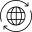

Noticias falsas y periodismo: recursos
1. Organizaciones e instituciones
2. Artículos
 Prensa
Prensa- Albright, J. Stop worrying about fake news. What comes next will be much worse. The Guardian (9/12/16)
- Elias, C. Prensa en la era de la posverdad. El Mundo (23/2/2018)
- Forès, L. Europa declara la guerra a les fake news. Ara (16/1/2018)
- Un manifiesto en contra de que el miedo a las fake news se use para el control político de los medios de comunicación. Público. (13/12/2017)
-  En la red
- Burdeos, J. Per què la veritat fa mandra o de Kant a Trump. Núvol. (9/03/2017)
- Gray, R. Lies, propaganda and fake news: a challenge of our age. BBC (1/3/2017)
- Hinojo. A. Hacia una nueva ética informativa. CCCBLAB (16/1/2018)
3. Libros
- Manipulación de la información televisiva / Lorenzo Vilches. Paidós, 1989
- La Realidad manipulada : radio, televisión, cine, prensa / Christian Doelker. Gustavo Gili, 1982
- De source sûre : nouvelles rumeurs d'aujourd'hui / Véronique Campion-Vincent, Jean-Bruno Renard. Payot & Rivages, 2002
- La Información del silencio : cómo se miente contando hechos verdaderos / Álex Grijelmo. Taurus, 2012